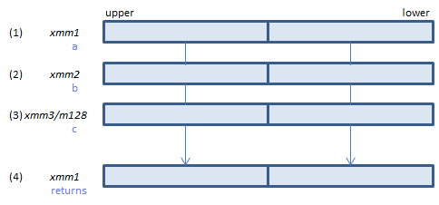
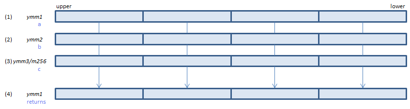
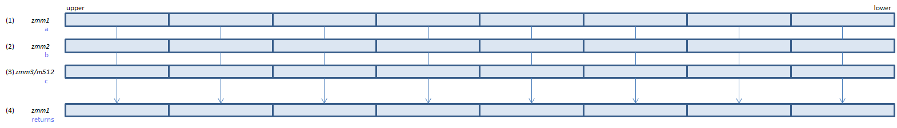

VPSHRDVQ - Packed SHift Right Double Variable Qword
VPSHRDVQ xmm1{k1}{z}, xmm2, xmm3/m128/m64bcst (V5+VBMI2+VL
__m128i _mm_shrdv_epi64(__m128i a, __m128i b, __m128i c)
__m128i _mm_mask_shrdv_epi64(__m128i a, __mmask8 k, __m128i b, __m128i c)
__m128i _mm_maskz_shrdv_epi64(__mmask8 k, __m128i a, __m128i b, __m128i c)

For each QWORD, (1) is shifted to the right by the number of bits specified in bit 5:0 of (3). Lower bits of (2) are copied to the emptied upper bits. The result is stored in (4).
VPSHRDVQ ymm1{k1}{z}, ymm2, ymm3/m256/m64bcst (V5+VBMI2+VL
__m256i _mm256_shrdv_epi64(__m256i a, __m256i b, __m256i c)
__m256i _mm256_mask_shrdv_epi64(__m256i a, __mmask8 k, __m256i b, __m256i c)
__m256i _mm256_maskz_shrdv_epi64(__mmask8 k, __m256i a, __m256i b, __m256i c)

For each QWORD, (1) is shifted to the right by the number of bits specified in bit 5:0 of (3). Lower bits of (2) are copied to the emptied upper bits. The result is stored in (4).
VPSHRDVQ zmm1{k1}{z}, zmm2, zmm3/m512/m64bcst (V5+VBMI2
__m512i _mm512_shrdv_epi64(__m512i a, __m512i b, __m512i c)
__m512i _mm512_mask_shrdv_epi64(__m512i a, __mmask8 k, __m512i b, __m512i c)
__m512i _mm512_maskz_shrdv_epi64(__mmask8 k, __m512i a, __m512i b, __m512i c)

For each QWORD, (1) is shifted to the right by the number of bits specified in bit 5:0 of (3). Lower bits of (2) are copied to the emptied upper bits. The result is stored in (4).
_mask_ if k bit is 0, a is copied.
_maskz_ if k bit is 0, zero cleared.
x86/x64 SIMD Instruction List
Feedback